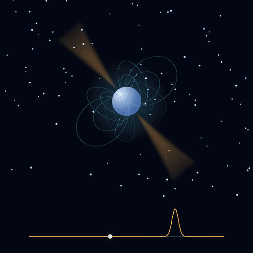
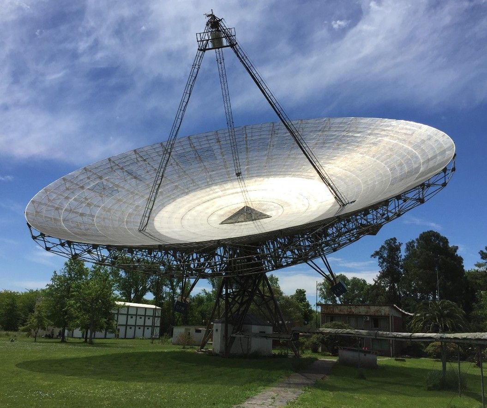
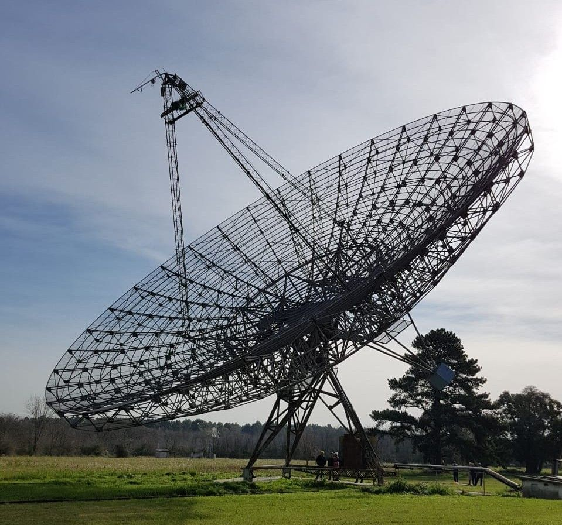
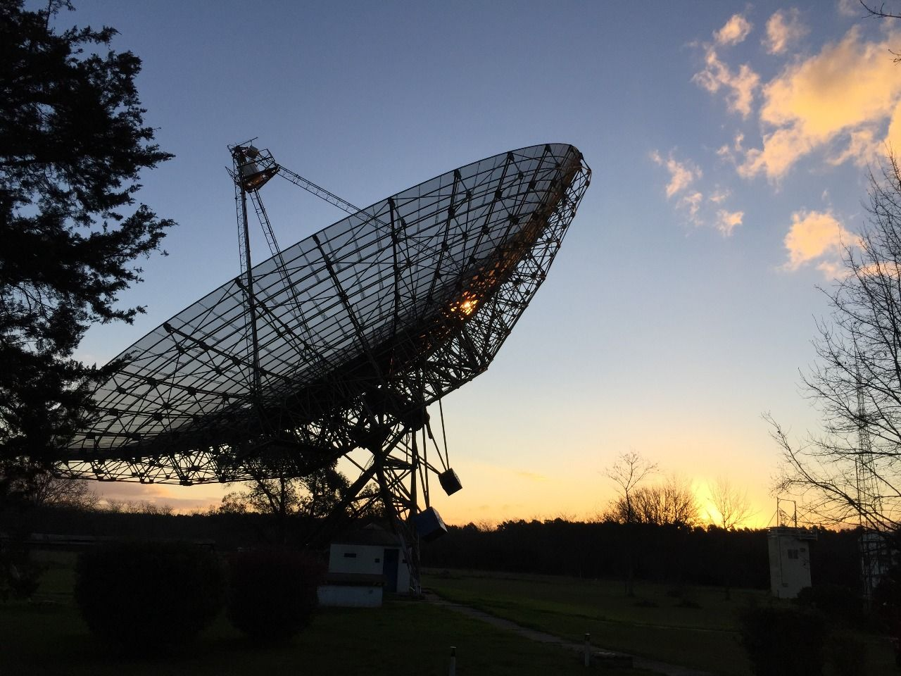

Argentine Institute of Radioastronomy · Rochester Institute of Technology
PuMAPulsar Monitoring in Argentina
We listen to neutron stars from the southern sky. With the two 30-metre antennas of the IAR we monitor pulsars for years, catch their glitches as they happen, and follow magnetars and fast radio bursts.
The basics
What is a pulsar?
A pulsar is a neutron star: the collapsed core of a massive star, more massive than the Sun yet only about 20 km across. It spins fast and carries an extremely strong magnetic field.
Its magnetic axis is tilted with respect to its rotation axis, so beams of radio waves sweep around like the light of a lighthouse. Each time a beam points at the Earth, our antennas record a pulse. Some pulsars are as regular as the best atomic clocks.
That regularity is what lets us notice when something changes, such as a glitch, an abrupt spin-up of the star. Catching those moments is what we do.

Research
What we study
PuMA is a scientific collaboration dedicated to pulsar observation from the southern hemisphere. Our long-term campaigns on rapidly rotating, highly magnetised neutron stars aim to understand their nature. Pick a topic to filter the telegrams and papers below.
Astronomer’s Telegrams
Latest detections
When something happens in the sky, we tell the community. These are the telegrams we have published on The Astronomer’s Telegram, on behalf of the PuMA Collaboration.
Nothing here for this filter yet.
Publications
Papers, proceedings and preprints
Everything the collaboration has published, from the first antenna upgrade paper to the latest preprints.
Nothing here for this filter yet.
Gravitational waves
Collaboration with LIGO–Virgo–KAGRA
PuMA provides pulsar timing ephemerides to the LIGO–Virgo–KAGRA (LVK) Collaboration, for the O4a and O4b observing runs. An accurate ephemeris tells a gravitational-wave search exactly when and at what frequency to expect a signal from a known pulsar, which is what makes sensitive searches for continuous waves possible.
We were also the ones who supplied the ephemerides for the 2024 Vela glitch. With them, the LVK looked for gravitational waves associated with the glitch: it found no significant candidates, and set the first direct upper limits on the gravitational-wave strain from this event, stricter than those inferred indirectly from the glitch energy.
Observatory
The Argentine Institute of Radioastronomy
A brief history
The Instituto Argentino de Radioastronomía (IAR), in Villa Elisa, Buenos Aires, was founded in 1966 as a radio observatory with 30-metre parabolic single-dish antennas (Antenna II was built later, in 1977). Its first goal was a high-sensitivity neutral-hydrogen survey of the southern sky, completed in 2000 with a high-impact publication.
Antennas Varsavsky (I) and Bajaja (II)
The two antennas cover declinations from −90° to −9°, with an hour-angle range of about 4 hours and an angular resolution of 30 arcminutes at 1420 MHz. Since 2004 they have been repaired and upgraded: the front end in 2009, new position encoders in 2014 and a software-defined radio for pulsar measurements from 2015. In collaboration with RIT, we refurbished and upgraded the antennas for high-quality pulsar science.
- Dishes
- 2 × 30 m
- Founded
- 1966
- Declination
- −90° to −9°
- Resolution
- 30′ at 1420 MHz



People
The team
Scientists and technicians from the IAR and RIT, with colleagues from other institutions.
Collaborators and co-authors
Contact
Get in touch
Want to coordinate observations, share ephemerides or join the collaboration? Write to us.
Villa Elisa, Buenos Aires, Argentina